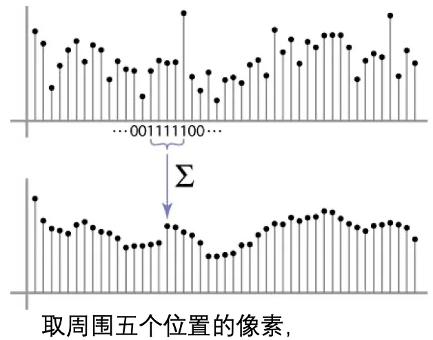
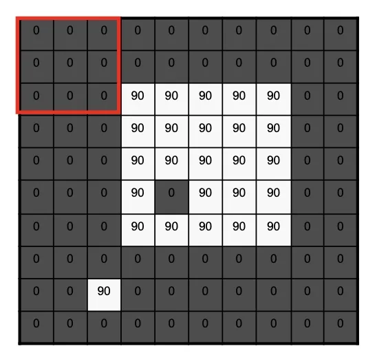
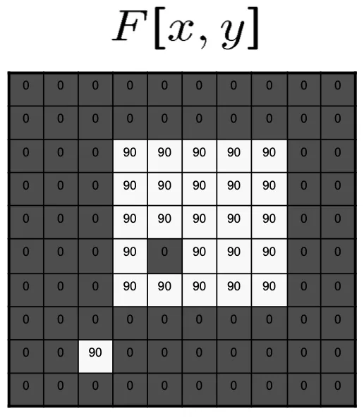
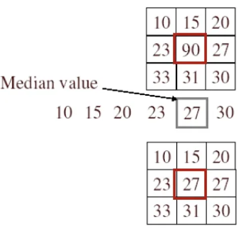
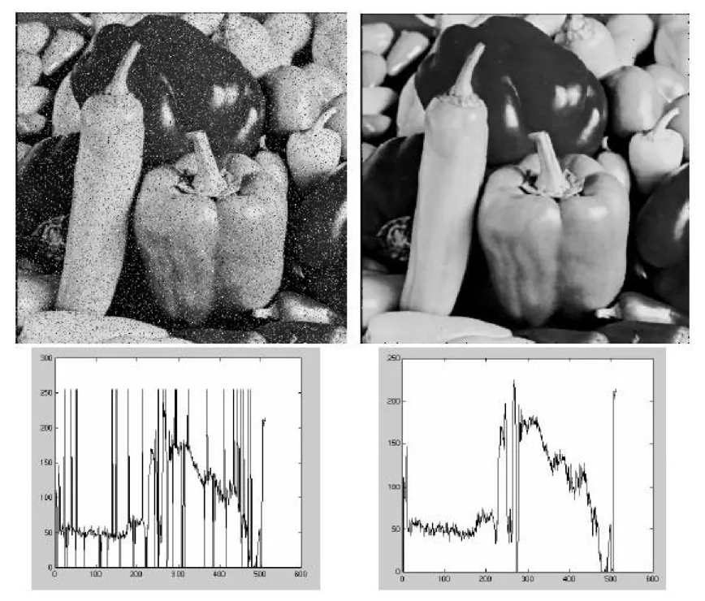
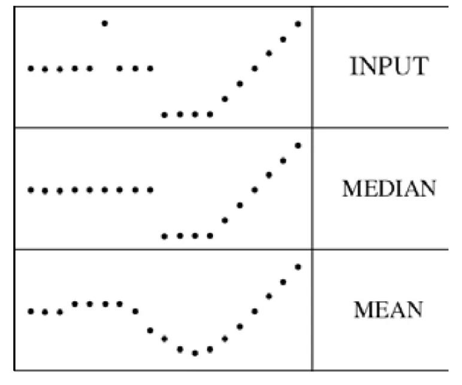
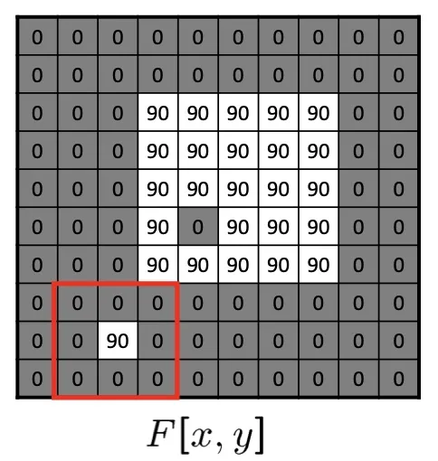

计算机视觉 · 第 2 章 图像处理基础
2.4 平滑滤波——均值滤波与中值滤波
上一节回答的是「为什么要滤波」——噪声拉低了图像质量，也会连累后面的分割、特征提取和识别。这一节开始动手做平滑：先用课件给的示例矩阵把均值滤波的滑窗求平均完整走一遍，看窗口变大以后图像为什么会糊；再换一种统计量，讲中值滤波，看它凭什么能对付椒盐噪声、还保得住边缘；最后引出按距离加权的高斯滤波，为下一节的高斯滤波参数做铺垫。
1. 均值滤波：用邻域的平均值替换每个像素
均值滤波（mean filtering）的做法一句话就能说完：用每个像素和它周围像素计算出来的平均值，替换图像中的每个像素；它能消除尖锐噪声，实现图像平滑、模糊等功能。这里要留意「尖锐」两个字——一个孤立的、和邻居差得很远的像素（比如椒盐噪声里的那个纯白点），在求平均时会被周围的正常值稀释掉，这正是它去噪的道理；代价是图像里所有细节都被同样地摊平，所以平滑与模糊是同一件事的两面。
课件先用一维情形说明权重怎么给：取周围五个位置的像素，这五个像素的权重为 [1, 1, 1, 1, 1] / 5。也就是说五个邻居一视同仁，谁也不比谁更重要，输出就是它们的算术平均：
权重 = [1, 1, 1, 1, 1] / 5
输出 = (p1 + p2 + p3 + p4 + p5) / 5把这件事搬到二维图像上，邻域就从一条线上的五个点变成中心像素周围的一个方块，最常用的取法是 3×3 的九个位置，每个位置分到一份 1/9：
3×3 均值核
1/9 1/9 1/9
1/9 1/9 1/9
1/9 1/9 1/9
用的时候唯一需要决定的量就是窗口取多大——3×3、5×5 还是更大，它直接决定了输出的模糊程度，这一点马上就会看到。
2. 滑窗：拿一个示例矩阵走一遍
课件没有停在公式上，而是给了一个只有 0 和 90 两种灰度值的示例矩阵，让 3×3 的窗口从左上角开始一格一格地滑过整幅图：每停一次，把窗口盖住的九个灰度值加起来除以 9，写进输出矩阵中与窗口中心对应的位置。
示例矩阵（只有 0 与 90 两种灰度，90 的方块里留了一个 0）
0 0 0 0 0 0 0 0 0 0
0 0 0 0 0 0 0 0 0 0
0 0 0 90 90 90 90 90 0 0
0 0 0 90 90 90 90 90 0 0
0 0 0 90 90 90 90 90 0 0
0 0 0 90 0 90 90 90 0 0
0 0 0 90 90 90 90 90 0 0
0 0 0 0 0 0 0 0 0 0
0 0 90 0 0 0 0 0 0 0
0 0 0 0 0 0 0 0 0 0
第一帧里窗口整个落在 0 上，平均值自然是 0；向右挪一格，窗口右下角压住了一个 90，九个值的和是 90，平均值就变成 10；再挪一格压住两个 90，平均值是 20；压住三个 90 时是 30，随后又按对称的方式回落成 20、10。课件用连续几帧记录的就是这个逐格累加、逐个数字被写进结果的过程。
等窗口扫完整幅图，原来的硬边界已经不见了，取而代之的是一条 0、10、20、30 组成的缓坡；矩阵下方那个孤立的 90 也被邻域摊薄，只在结果里留下 10 左右的小痕迹。
滤波结果（8×8）
0 10 20 30 30 30 20 10
0 20 40 60 60 60 40 20
0 30 60 90 90 90 60 30
0 30 50 80 80 90 60 30
0 30 50 80 80 90 60 30
0 20 30 50 50 60 40 20
10 20 30 30 30 30 20 10
10 10 10 0 0 0 0 0
对着这两张矩阵逐项看，均值滤波的两个特点就具体了。一是边界被柔化：0 和 90 原本是一次突跳，现在中间多出一圈 10、20、30 的中间值，视觉上就是糊。二是孤立噪声被削弱：嵌在 90 方块里的那个 0，在任何一个盖住它的窗口里都只占九分之一，于是它把窗口的平均值从 90 拉到 80，自己却被抹平了——这就是「消除尖锐噪声」的确切含义。
3. 窗口越大，图像越模糊
课件接着把同一幅原图像分别交给 3×3 均值滤波器和 5×5 均值滤波器处理，结论写得很直接：随着窗口的增大，图像越来越模糊。道理和上面那个示例是一致的：窗口越大，参与平均的像素越多、覆盖的邻域越广，中心像素的取值被越多邻居平摊，相邻像素之间的差异就被抹得越平；极端情况下窗口大到和整幅图一样大，输出会退化成一张只有一个灰度值的图。所以窗口大小就是平滑力度的旋钮——噪声压得越狠，细节也丢得越多，这对矛盾在后面每一节里都会反复出现。
4. 中值滤波：用邻域的中值替换中心像素
均值滤波把邻域里所有像素都拿来平均，软肋也在这里：一个离谱的极值会把平均值整个拽偏。中值滤波（median filtering）换了一个统计量——用每个像素和它周围像素的中值替换图像中的每个像素，也就是把邻域内的灰度值排好序，取正中间的那个值替换中心像素。课件给的例子是这样的：
邻域里的 9 个灰度值
10 15 20 23 90 27 33 31 30
排序后
10 15 20 23 27 30 31 33 90
↑ 中间的这一个：27
中心像素（原来的 90）被替换成 27这个例子点出了中值滤波的关键性质：排序之后，一个极端值无论多大，都只能排到队尾，永远坐不到正中间的位置上。所以中值滤波对脉冲噪声和椒盐噪声有良好的效果——这两类噪声恰好就是孤立的白点和黑点，它们的数值再极端也影响不了中值。

5. 中值滤波为什么能保住边缘
接下来是更值得比较的一点：同样是压噪声，中值滤波和均值滤波的结果差在哪里。均值滤波在边缘附近会把两侧的灰度混在一起，算出 10、20、30 这样的中间值，边缘于是被推成一条缓坡；中值滤波取的是排序后居中的那个值，只要窗口内多数像素属于同一侧，输出就取那一侧的值，灰度突跳因此得以保留。课件的结论是：中值滤波可以有效保留边缘。


把这两张图放在一起看，就能明白为什么工程上常把中值滤波当成椒盐噪声的首选：噪声是「少数派的极端值」，而中值滤波恰好是按「多数派」投票的。
6. 高斯滤波：按距离加权的平均
平滑这条线最后落到高斯滤波上。均值滤波对邻域内所有像素一视同仁，可是离中心越远的像素，和中心像素的关系理应越疏远。高斯滤波（Gaussian filtering）就是顺着这个直觉做的：用每个像素和它周围像素的加权平均灰度值替换图像中的每个像素，距离中心像素越近的像素权重越大。
课件给出的 3×3 高斯核把这句话写成了数字：中心权重 4，上下左右权重 2，四个角权重 1，离中心越远权重越小：
3×3 高斯滤波核
1 2 1
2 4 2
1 2 1课件同时提醒，这个核是对高斯方法的模拟近似：真正的高斯权重来自连续高斯函数的采样，上面这个矩阵只是它在 3×3 邻域上的一个方便版本。（九个权重之和为 16，实际使用时要除以 16 做归一化，输出才不会整体变亮。）

到这里，平滑滤波的两条主线都出来了：均值滤波和高斯滤波都用加权平均压噪声，区别只在权重是平均给还是按距离给；中值滤波则改用取中位数的方式压极值，代价是计算时要排序。高斯滤波还有核的大小与标准差 σ 两个参数没交代，那是下一节 2.5 的内容。
本节小结
- 均值滤波用每个像素和周围像素的平均值替换该像素：一维情形取周围五个位置，权重为 [1, 1, 1, 1, 1] / 5；二维常用 3×3 邻域，九个位置各占 1/9。它能消除尖锐噪声、实现平滑与模糊。
- 滑窗每挪一格就做一次「邻域求和除以邻域个数」。课件示例里 0 与 90 的硬边界被算成 10、20、30 的过渡带，90 方块中的那个 0 被平均成 80，孤立的 90 也只剩 10 左右的痕迹。
- 随着窗口的增大，图像越来越模糊：参与平均的邻域越广，相邻像素的差异被抹得越平，细节丢得越多。
- 中值滤波用邻域灰度值的中值替换中心像素。排序后极值永远到不了中间位置，所以它对脉冲噪声和椒盐噪声有良好的效果。
- 中值滤波不会像均值滤波那样把边缘两侧的灰度混成一个中间值，因此可以有效保留边缘——这也是椒盐噪声场景下优先选它的原因。
- 高斯滤波做的是加权平均，离中心越近权重越大，3×3 的模拟近似核中心为 4、上下左右为 2、四角为 1（和为 16，需归一化）；核的大小与标准差 σ 是下一节 2.5 的内容。